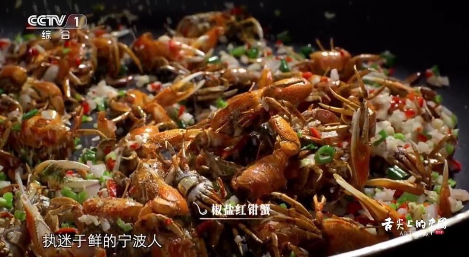
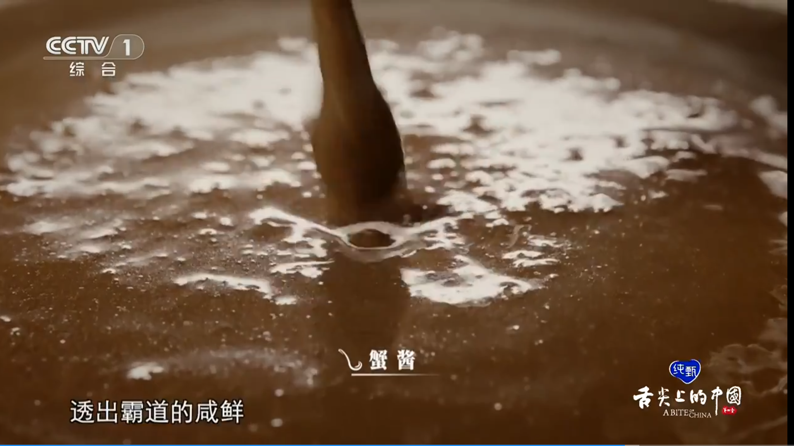
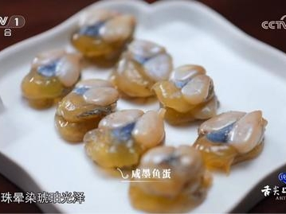
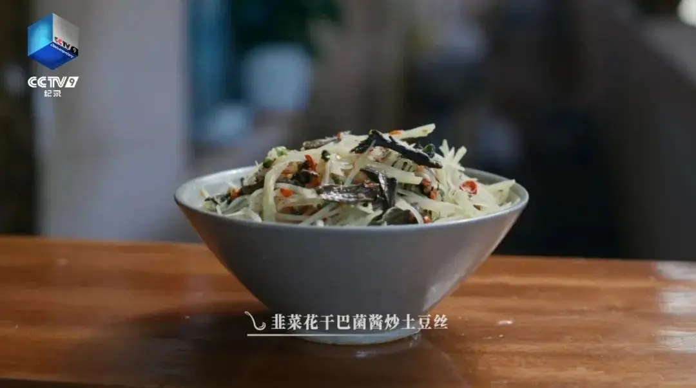
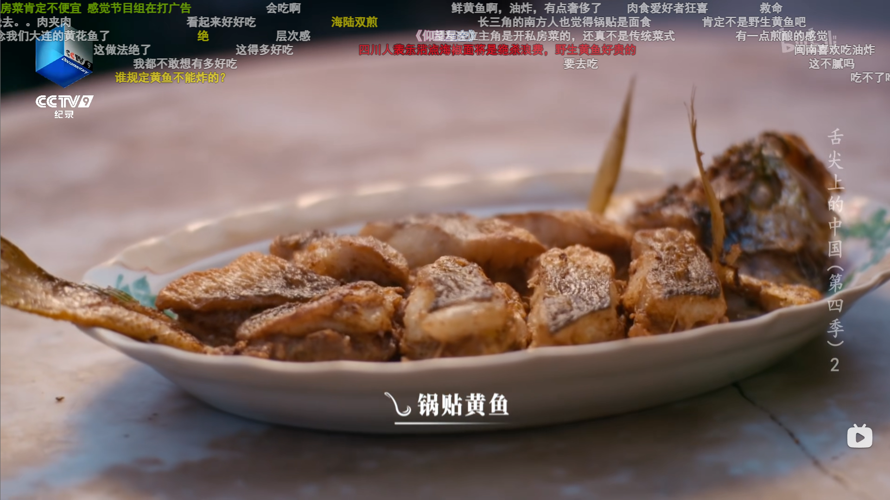
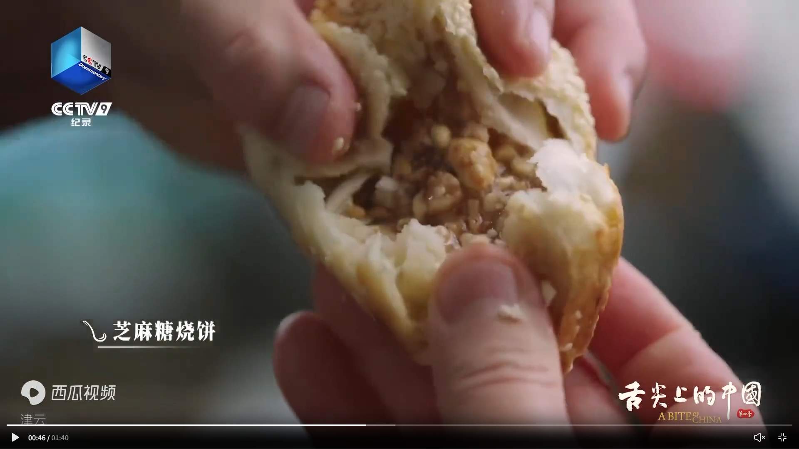
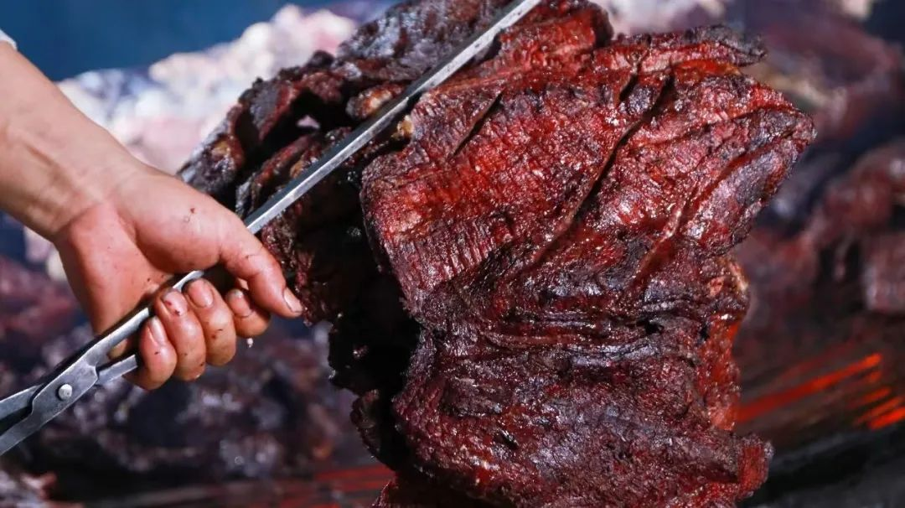

- 这里记录的是我在网上刷到的各地美食，未来的某天我要成为游历世界的美食猎人!!! xixi
“本来想只记菜名的但是有点单调。。还是先找图挂上等我吃上了再换成自己的照片”
吃吃吃！
回家吃？ 海肠汁堂煎虾夷贝 扇贝狮子头
宁波 红钳蟹（椒盐、油炸）、蟹酱、咸墨鱼蛋
  
扬州 烫干丝
台湾 虱目鱼（鱼腹粥、煎鱼柳、鱼皮煲、五柳汁）
昆明 干巴菌 韭菜花干巴菌酱土豆丝

厦门 锅贴黄鱼

湘阴 熏鱼、腊鱼、腊XX
内江 陈皮牛肉丝 怪味鱼皮
潮汕 螺头花胶 鹅肉（面、炒饭、白卤、
天津 油酥烧饼

连州 丰阳牛肉干

留下你来过的痕迹吧！